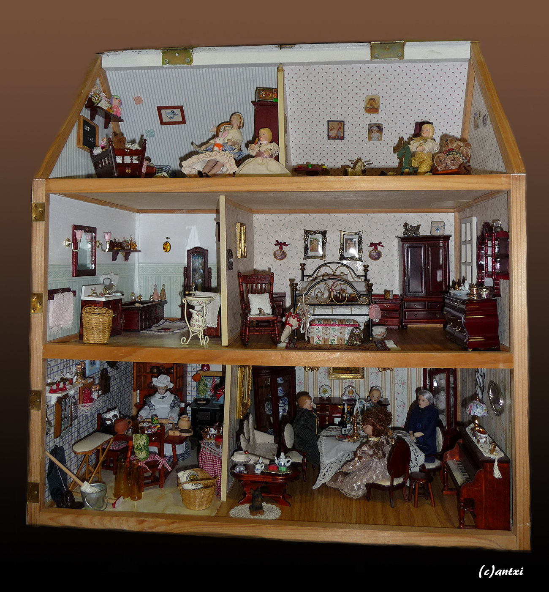
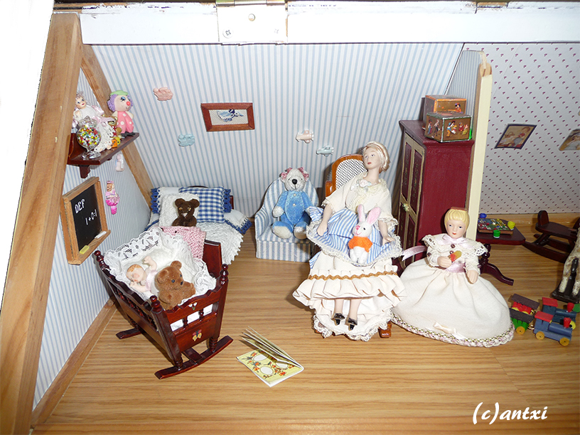
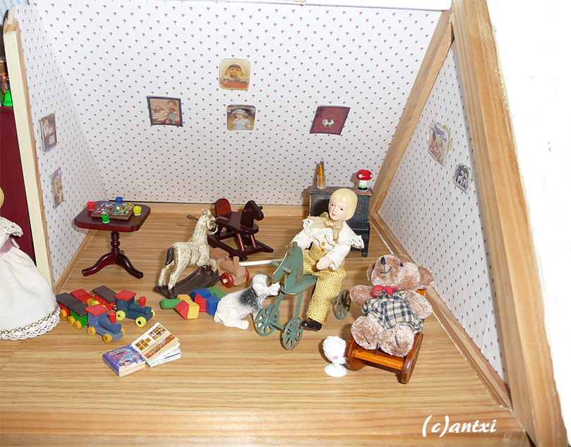
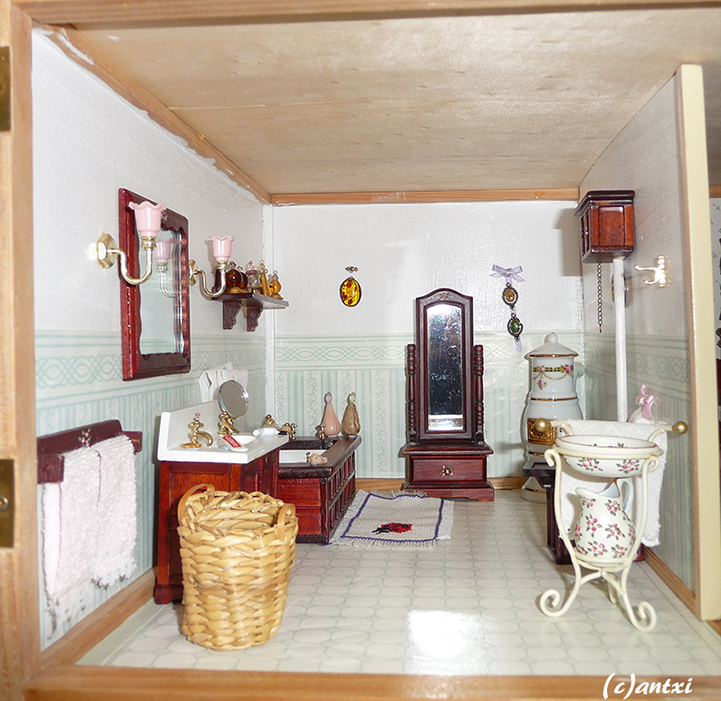
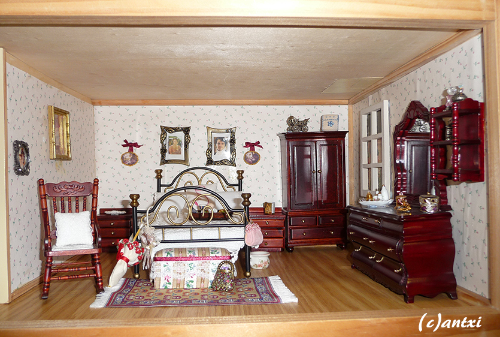
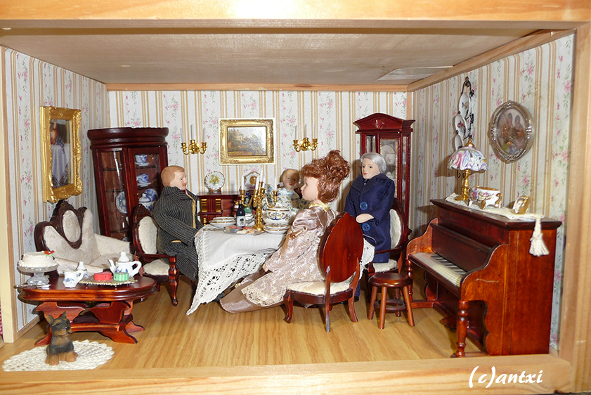
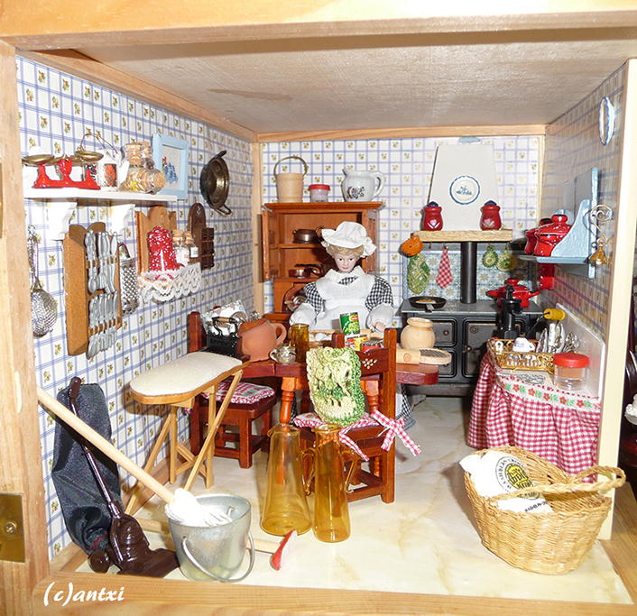

Explore each room of this doll's house to find hidden facts about it.

×

The teddy bear on top of the bed was a gift and it is handmade.
Both the wardrobe and the baby cot were repainted by us taking inspiration from traditional Austrian houses.
×

The ludos game on top of the small table was handmade by us.
All the dolls were bought online and the clothes were handmade by Silvia. In this house we decided not to install light.
×

The bathroom has all the furniture as it came with the kit but we added the big heater in the corner after we saw them in palaces in Vienna.
The ladybug rug was cross-stitched by our daughter when she was a teen and Silvia painted the basin that was originally white.
×

The bedroom has stayed the same, but as usual, Silvia has handmade the bed clothing.
Do you recognize the people on the pictures in the back? Our love for Pride and Prejudice is present in our houses!
×

In this room we find a very interesting tablecloth... which is actually a handkerchief from 1958.
We also included a picture of our family over the piano, and once again the dolls were dressed by Silvia.
×

We love to make our kitchens as full of live as possible, that's why we include so many details. And some of them handmade! Like the bread bag or the sink area.
The glass pitchers in the front are from the beginning of the XX century.